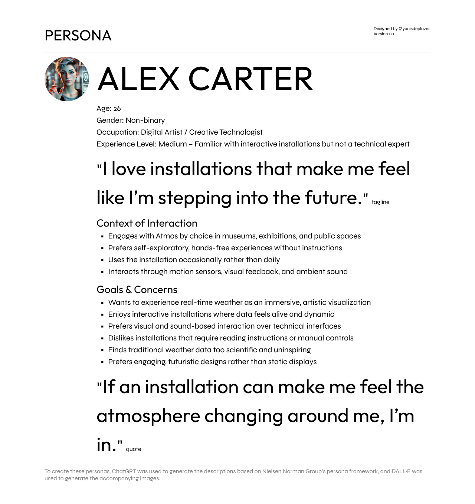
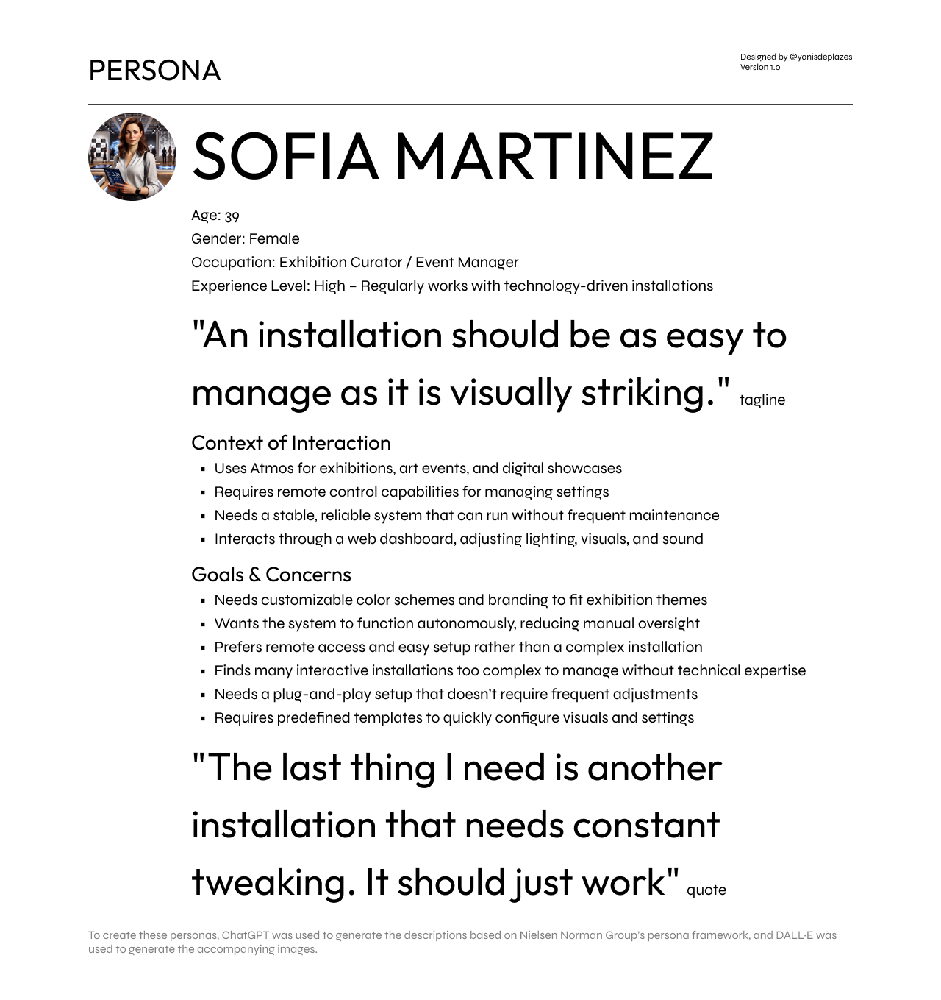
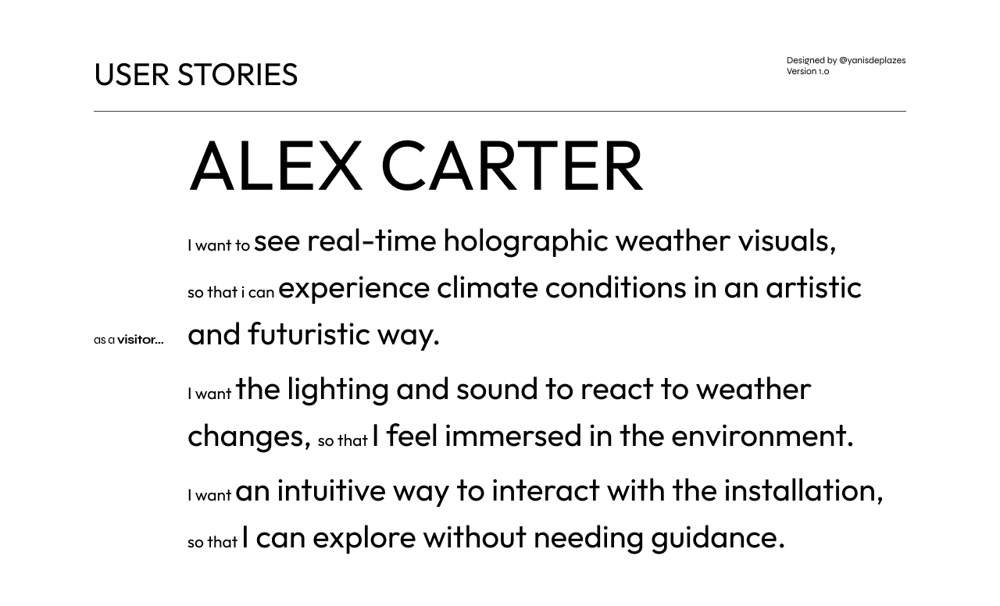
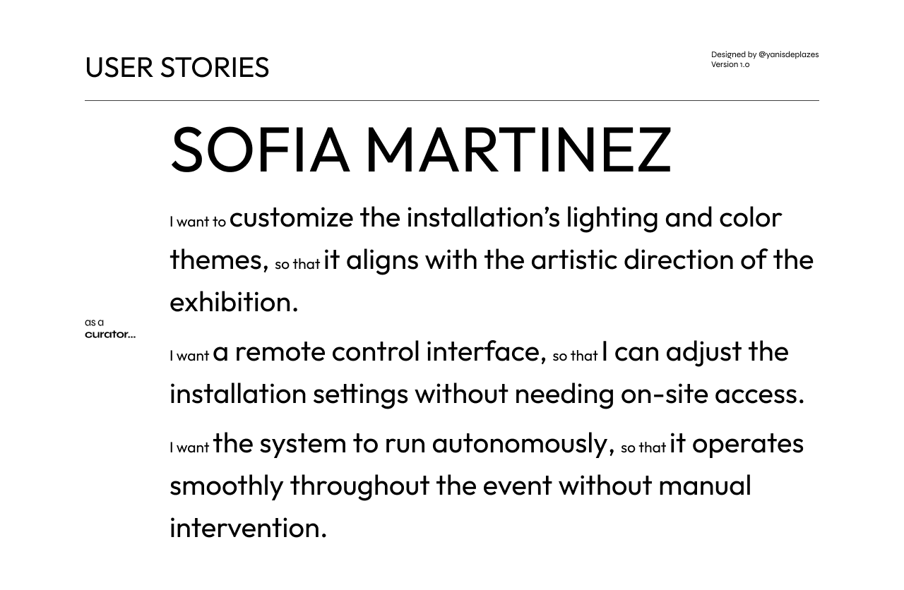
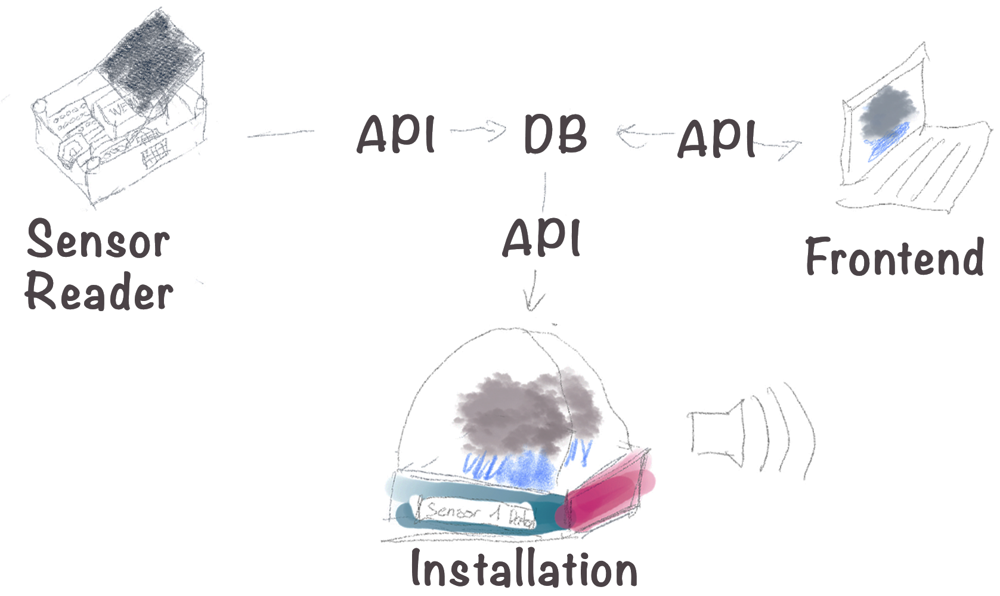

Concept
Vision
Atmos transforms real-time weather data into a holographic, audio-visual installation, creating a multi-sensory experience that blends science, technology, and art.
Mission
- To reimagine weather by integrating light, and sound.
- To bridge data and art, making it engaging and intuitive.
- To create an immersive space where people can see, and hear the weather.
Values
- Futuristic – Pushing boundaries with real-time visuals.
- Immersion – Experiencing through light, sound, and holography.
- Connectivity – Linking differet physical devices into one network.
Users & User Needs
Personas
To define the Target users, Proto Personas were used. These are based on assumptions rather than on user research. The selected Personas have a narrow scope and focus on the specific product instead of representing users across multiple products.
The following framework was used to describe each persona:
- Name, age, gender, and a photo
- Tagline describing what they do
- Experience level
- Context of interaction
- Goals and concerns
- A direct quote
This is based on the Nielsen Norman Group - Personas: Study Guide.


User Stories
To define the User Needs, user stories were used. Each user story follows the as a [persona], I [want to], [so that].
This is based on the Atlassian - User story template and examples.


Main Goal
The main goal of Atmos is to allow users to experience real-time weather data in a way that is engaging, immersive, and artistic without the use of numbers as a value. It should create an environment where users can feel like they are truly experiencing the weather through visuals and sounds.
This goal should be achieved within the 10 weeks of the IOT Program.
Product Requirements
The product requirements ensure that Atmos meets the user expectations. Each of these product requirement features should be fully functional by week 10.
Real-Time Weather Visualization
Visuals, lighting, and sound must update within 5 seconds of weather changes.
Intuitive User Experience
Experience must feel natural, intuitive, and technologically innovative.
Event Customization & Remote Control
Remote control via a web interface, with settings stored via API/database.
Scalability & Replicability
The system must be modular, scalable, and well-documented for replication.
Sketches and AI Generated Concepts

AI Generated Concept with Chat GPT


Version History
This section lists the project's Concept file, with each version reflecting incremental updates and refinements.